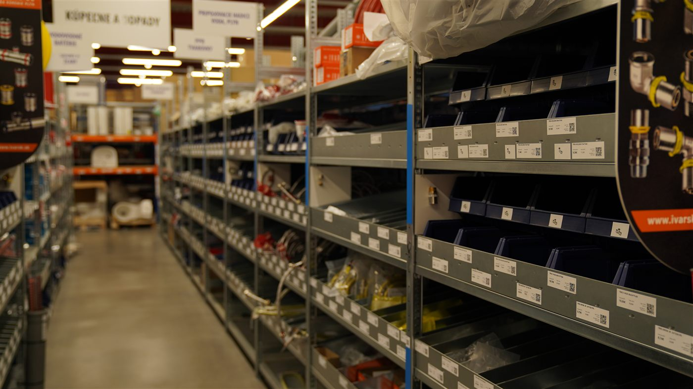
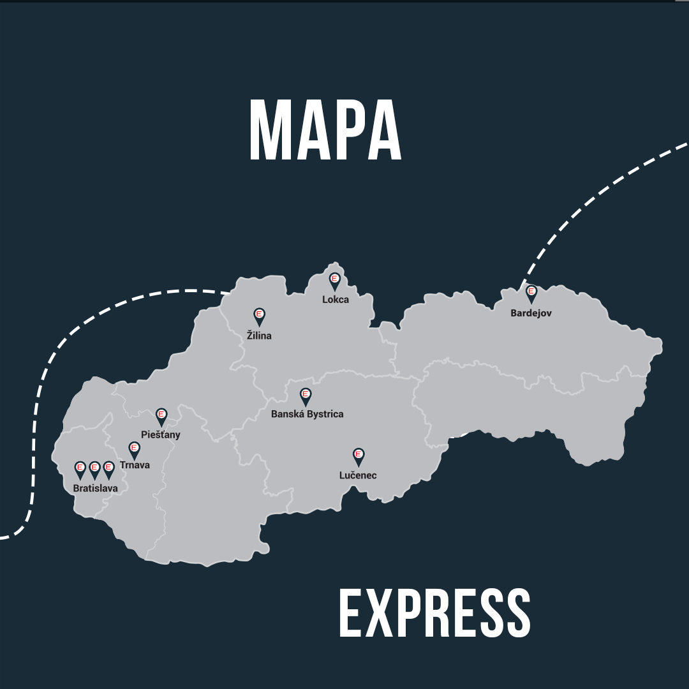

Montér stojí na stavbe — a niečo mu chýba
Inštalatér rozoberie 12-ročný kotol, chýba mu fitka alebo čerpadlo, klient stojí za chrbtom. Dnešná realita: telefonát na pobočku, „máte to skladom?", obracanie auta, strata hodiny. Najdrahší moment dňa je ten, keď nevie, čo to je, a potrebuje to teraz.

Empiria je spojka — ale chýba jej posledný článok
Empiria sa sama definuje ako prepojenie medzi výrobcom, realizačkou a investorom. Web a eshop riešia objednávku. Lenže rozhodnutie nepadá za počítačom — padá na stavbe, v ruke montéra. A presne tam Empiria dnes nie je.
Flywheel, ktorý ženie predaj materiálu
Kľúčový ťah: appka nie je len nástroj pre montéra — je to kolobeh. Marketplace „nájdi montážnika ↔ leady" prepojí investora a montéra a každé otočenie zvýši predaj materiálu.
Ako sa kruh točí
Päť vecí, čo montérovi šetria deň

Skenuj & nájdi
Foto štítku kotla → appka rozpozná model a vyhodí kompatibilnú náhradu. Koniec hádania.

Živý sklad predajní
Reálna mapa 17 predajní so semaforom dostupnosti. Rezervuj a vyzdvihni do 15 minút.

Zákazky z Empiria siete
Investori, čo si vybrali materiál, hľadajú montéra. Vyšší level = leady ako prvý.

Druhá strana: Kúpeľne
Investor si navrhne kúpeľňu, vyskúša v AR a nájde overeného montéra — lead sa vráti do Parťáka.
Postavené na reálnom brande
Appka žije pod divíziou express.EMPIRIA — navy, EMPIRIA červená, maskot-inštalatér a motív prerušovanej čiary. Žiadne generické fotky ani vymyslené farby: všetko z firemného archívu. Detaily v Brand & UI kite.

Pozri si to naživo
Klikací prototyp oboch appiek aj všetky obrazovky ako artboards.